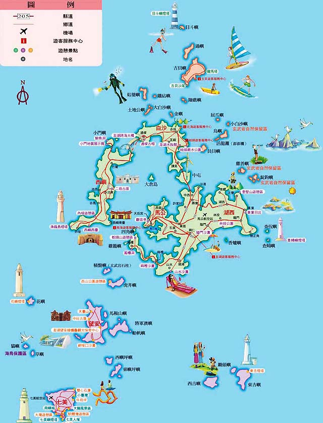
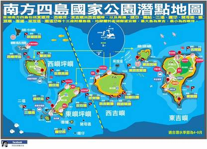
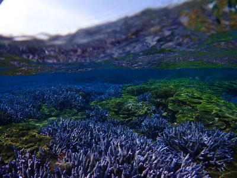
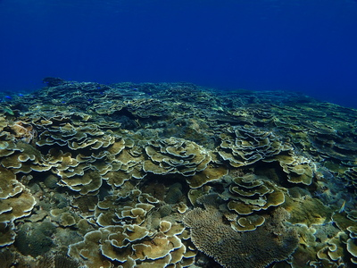

澎湖
【景點介紹】
|

澎湖-南方四島 澎湖群島位於臺灣海峽上，是臺灣唯一的島縣，由90座島嶼組成，全島面積126.864平方公里之資料。極東：查母嶼； 極西：花嶼； 極南：七美嶼； 極北：大蹺嶼，北回歸線23°27穿過群島之中的虎井嶼之南。火山玄武岩地形遍佈，造就不同於台灣其他地方潛域的特出景致。更因為淺灘海域中年日照充足，加上溫暖的黑潮支流流經，提供此處軟硬珊瑚充足的養分，進而吸引魚群群聚。 氣候 澎湖群島的地形低且平，加上位於臺灣海峽中央，因此，氣候 深受雨量與季風的影響。 雨量：澎湖群島平均年雨量約有1000毫米左右，80%集中在夏季。在陽光照射與東北季風強烈吹襲之下，雨量的蒸發量每年高達1800毫米。因此，群島上的植物自然的演化出較抗風、耐旱的生態系。 季風：由於澎湖缺乏高山的屏障，冬天的風速較大，每年強風日數高達約100天。根據統計，10月至翌年1月，風速都維持在每秒6公尺以上；但是當結構完整的大陸冷氣團南下時，風速有時會達到8級以上，瞬間陣風則會達到12級左右。 |
【著名潛點】

南方四島的潛點分布主要分為兩個大區：東、西吉嶼潛域和東、西嶼坪潛域
|
|  |  |
【建議行程】
行程說明
|
第一天 第一天上午05:40在松山機場集合，預計搭乘06:35的飛機前往澎湖，馬公機場，中午搭專船接往將軍嶼，隨既環境簡介及分配住宿，午餐後準備兩支船潛，潛點視風浪狀況決定之。  第二天
第二天上午兩支船潛，下午一支船潛。晚餐後自由活動或自費夜潛。 第三天 （潛水集合時間，會以當地導潛判斷何時適合為主，故無法提前告知集合時間） 第四天 上午7點準備搭專船返回馬公碼頭，開始馬公一日遊，下午4點，準備搭飛機回台北，結束快樂旅程。（預計航班：AE370/16:20-17:15） |
費用說明
行程費用及更多活動詳情請洽iDiving Line@

- 團費原價 : $21,000
- 現金優惠價/會員價：$20,500
- 會員現金優惠價：$20,000
|
註：以上費用活動期間的食宿、三佰萬旅遊平安險,當地將提供機車代步。 但不包含潛水裝備租借的費用及個人性質的花費。 澎湖團費用已包含台北～馬公機場機票費用（大約 $4,100）。 |
| 立即報名 |
【注意事項】
|
【協辦旅行社】
iDiving 為了讓旅遊活動有保障，所有旅遊行程特別與旅行社偕同舉辦，讓你玩得開心又有保障。
| 主辦單位 | 愛潛水股份有限公司 | 承辦人：愛潛水 | 行動電話：0909-097696 |
| TEL：02-2882-7696 | FAX：02-2882-7656 | ||
| E-MAILl：info@idiving.com.tw | |||
| 地址：台北市士林區前港街8號 | |||
| 協辦單位 | 萬陽旅行社有限公司 | 業務請洽：蘇恒璀 | 行動電話：0937-196518 |
| TEL：02-2517-1333 | FAX：02-2508-1537 | ||
| E-MAIL：tracy410@ms45.hinet.net | |||
| 地址：台北市南京東路3段91號四樓之三 | |||